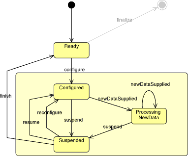

|
FreeHEP API Version current |
|||||||||
| PREV CLASS NEXT CLASS | FRAMES NO FRAMES | |||||||||
| SUMMARY: NESTED | FIELD | CONSTR | METHOD | DETAIL: FIELD | CONSTR | METHOD | |||||||||
This interface is, when added to a SequentialRecordLoopRecordEvent
.
In a batch environment this class is configured, supplied with record, and finishes.
An interactive envrionment is more complex as the user can change the
configuration of an instance of this class at any time that the
SequentialRecordLoop object is not looping. This means that
an instance of this class needs to check it is correctly configured at
the start of any loop. For the first loop of an
SequentialRecordLoop object its listener will receive a
configure(org.freehep.record.loop.event.ConfigurationEvent) event to tell them to prepare to receive new records.
After that loop the configuration may be changed before the next loop is
executed. In that case the RecordListener will receive a
reconfigure(org.freehep.record.loop.event.ConfigurationEvent) event indicating that the configuration has changes
and that the listener should prepare itself for new records using this
new configuration. If the configuration has not changed then the
listener gets a simple resume(org.freehep.record.loop.event.RecordEvent) message to indicate that it is
about to receive new records. The full state diagram for an
EventListener is shown above
Once a loop has completed, or been interrupted, a suspend(org.freehep.record.loop.event.RecordEvent) event
is sent by the SequentialRecordLoop object. this allows
this class to release any time sensitive resources while the user
considers their next move. Both a resume and a reconfigure event should
be used to reacquire the resources that have been released.
This class' finish(org.freehep.record.loop.event.RecordEvent) method is invoked whenever it is removed
from a SequentialRecordLoop object. This can be caused by a
direct invocation of the loop's removeRecordListener or
dispose method, which implicitly removes the loops listener
if there is one. This event is also be triggered when a
SequentialRecordLoop is reset. The finish event gives the
RecordListener an opportunity to do any housekeeping task
that are related to its participation in the
SequentialRecordLoop such as output summary information.
After handling a finish event this class should be prepared to handle a
configure event as such an event will occur for the first loop after
either the SequentialRecordLoop object has been reset or
after this class has been added back to a
SequentialRecordLoop.
| Method Summary | |
void |
configure(ConfigurationEvent event)
Tells this object to configure itself in preparation for the first recordSupplied(org.freehep.record.loop.event.RecordSuppliedEvent) call. |
void |
finish(RecordEvent event)
Tells this object that an SequentialRecordLoop to which is has been added has been disposed of, and this object should execute any housekeeping tasks trelated to its participation in this SequentialRecordLoop. |
void |
reconfigure(ConfigurationEvent event)
Tells this object to reconfigure itself in preparation for a new set of recordSupplied(org.freehep.record.loop.event.RecordSuppliedEvent) calls. |
void |
recordSupplied(RecordSuppliedEvent event)
Called every time a new record is read by the SequentialRecordLoop's SequentialRecordSource object. |
void |
resume(RecordEvent event)
Tells this object to prepare for a new set of recordSupplied(org.freehep.record.loop.event.RecordSuppliedEvent)
calls using the its existing configuration. |
void |
suspend(RecordEvent event)
Tells this object that there will be either a resume(org.freehep.record.loop.event.RecordEvent) or
reconfigure(org.freehep.record.loop.event.ConfigurationEvent) before any more recordSupplied(org.freehep.record.loop.event.RecordSuppliedEvent) calls will
be made. |
| Method Detail |
public void configure(ConfigurationEvent event)
recordSupplied(org.freehep.record.loop.event.RecordSuppliedEvent) call.
event - a ConfigurationEvent describing the configuration to use.public void finish(RecordEvent event)
event - the RecordEvent for this event.public void recordSupplied(RecordSuppliedEvent event)
event - a RecordSuppliedEvent describing the data supplied.public void reconfigure(ConfigurationEvent event)
recordSupplied(org.freehep.record.loop.event.RecordSuppliedEvent) calls.
event - a ConfigurationEvent describing the new configuration to
use.public void resume(RecordEvent event)
recordSupplied(org.freehep.record.loop.event.RecordSuppliedEvent)
calls using the its existing configuration.
event - the RecordEvent for this event.public void suspend(RecordEvent event)
resume(org.freehep.record.loop.event.RecordEvent) or
reconfigure(org.freehep.record.loop.event.ConfigurationEvent) before any more recordSupplied(org.freehep.record.loop.event.RecordSuppliedEvent) calls will
be made.
event - the RecordEvent for this event.
|
FreeHEP API Version current |
|||||||||
| PREV CLASS NEXT CLASS | FRAMES NO FRAMES | |||||||||
| SUMMARY: NESTED | FIELD | CONSTR | METHOD | DETAIL: FIELD | CONSTR | METHOD | |||||||||